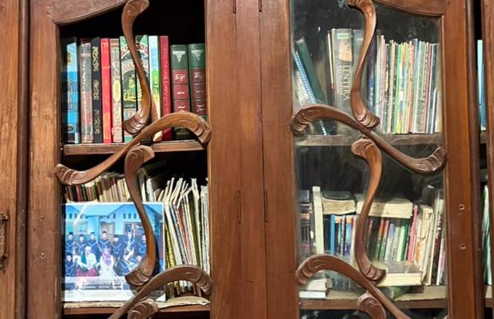
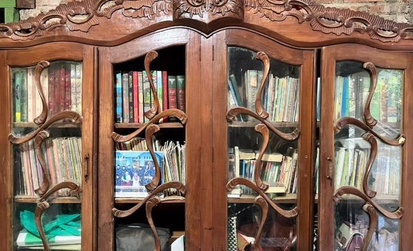
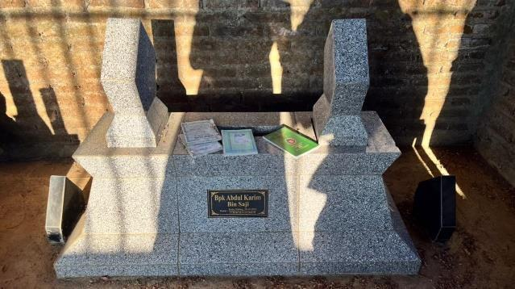
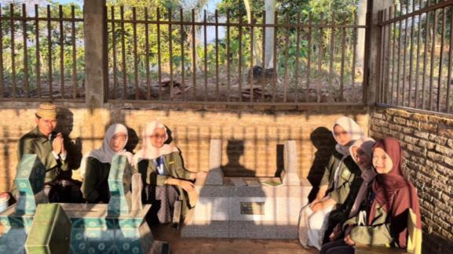
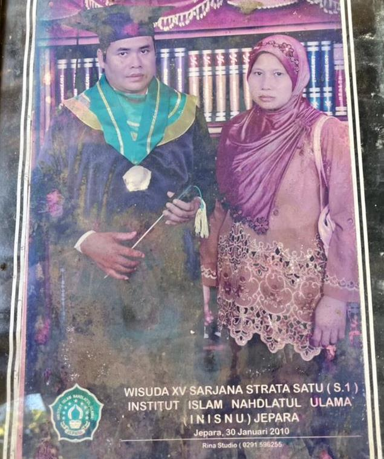
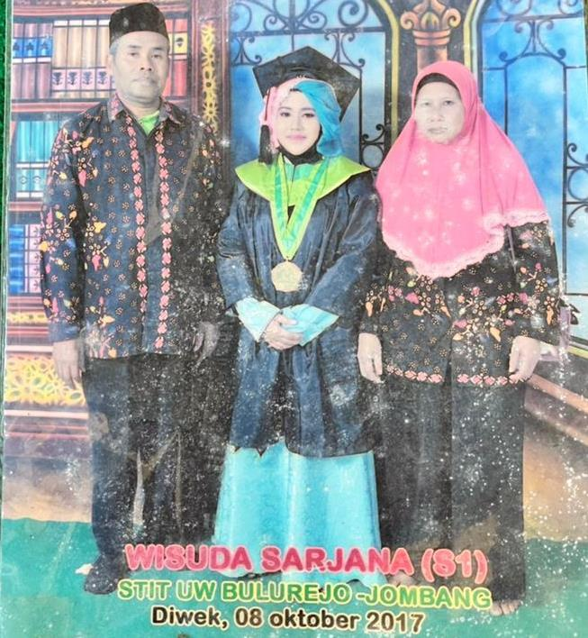
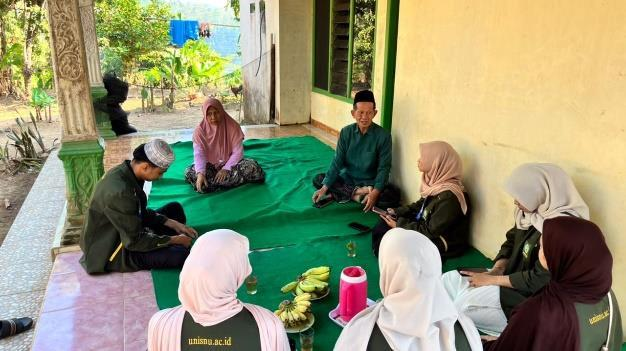
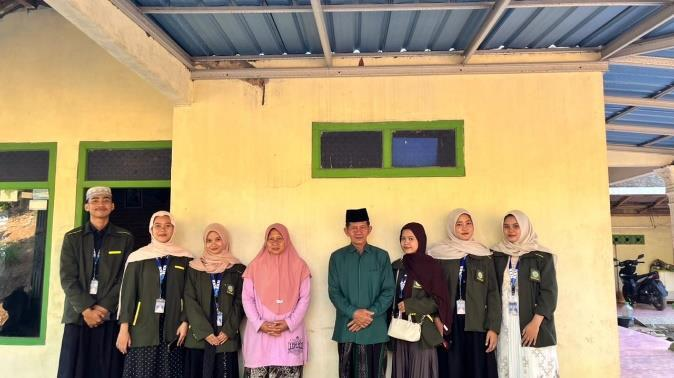

Berpulangnya Sang Perintis & Sosok yang Membumi
PAPASAN — Perintis pendidikan dan organisasi Nahdlatul Ulama (NU) di Desa Papasan, Bapak Abdul Karim, tutup usia pada hari Rabu Pahing, 28 Oktober 2020, bertepatan dengan tanggal 11 Rabiul Awal 1442 Hijriah. Pak Dul, sapaan akrab almarhum Bapak Abdul Karim, lahir pada 26 April 1965 dan dimakamkan di kompleks makam keluarga Bani Basyir, Papasan RT 05 RW 02, tepat di belakang MI NU Papasan, dekat dengan Masjid Al-Mubasyir.
Kabar wafatnya menjadi kehilangan teramat besar bagi warga Papasan, khususnya bagi keluarga besar Nahdlatul Ulama yang selama puluhan tahun dibina langsung oleh almarhum bersama rekan seperjuangannya, Bapak Solehan (Bapak Solekan, M.Pd.I).
Bapak Solehan, yang juga menjabat Tanfidziyah mendampingi almarhum sebagai Suriyah, mengenang Pak Dul sebagai sosok yang tekun namun tetap membumi. “Dari muslimatan ke muslimatan sering jalan bareng, terus setelah ada kendaraan ya sering berangkat bareng juga,” kenang Bapak Solehan.
Merintis NU dari Akar Rumput: Dari Terbang Jidor Mbah Basyir hingga Tradisi “Gandul”
Nama Bapak Abdul Karim tidak bisa dilepaskan dari sejarah masuknya NU secara kelembagaan di Papasan. Sebelum era Pak Dul, ajaran NU sebenarnya sudah lebih dulu diperkenalkan oleh Mbah Basyir, tokoh asal Banjaran yang menetap di Papasan dan menyebarkan Islam lewat kesenian terbang jidor, hingga berhasil mengumpulkan bapak-bapak setempat dan mengajarkan mereka salat. Namun saat itu NU masih sebatas kegiatan kelompok kecil, belum menjadi identitas keagamaan yang dikenal luas oleh masyarakat.
Kedekatan Pak Dul dengan Bapak Solehan sendiri sudah terjalin sejak masa sekolah. Selama tiga tahun, keduanya rutin jalan kaki bersama dari Papasan menuju sekolah di Bangsri, sebab saat itu transportasi belum tersedia.
Sesekali mereka menumpang mobil pick up yang warga sekitar biasa menyebutnya tradisi “gandul”. Rumah Pak Dul sendiri berada di Dukuh Gimbal, Desa Papasan, dan tak jarang keduanya belajar bersama secara bergantian, baik di rumah Pak Dul, rumah Bapak Solehan, atau rumah teman lainnya.
Meletakkan Fondasi Kelembagaan NU & Pendidikan Islam (1985–2014)
Barulah pada 1985, keduanya mulai merintis kegiatan keagamaan yang lebih terorganisasi, dimulai dari muslimatan hingga struktur organisasi NU. Bapak Solehan sendiri yang lebih dulu merintis kegiatan ini, sebelum akhirnya Pak Dul ikut bergabung dan mereka berjuang bersama-sama.
Setiap harinya mereka bahkan membuat jadwal keliling untuk mengisi muslimatan dari satu kelompok ke kelompok lain di Papasan.
TK NU Papasan
Fondasi pendidikan prasekolah berkarakter Islami.
MI NU Papasan
Madrasah Ibtidaiyah pencetak tunas bangsa berakhlak mulia.
MTs NU Papasan
Pendidikan tingkat lanjutan di bawah Yayasan Aswaja.
Di bidang pendidikan, Pak Dul dan Bapak Solehan merintis TK NU Papasan dan MI NU Papasan pada 1996, disusul MTs NU Papasan pada 2014. Ketiga lembaga tersebut bernaung di bawah satu yayasan bernama Yayasan Aswaja.
Dalam struktur organisasi, Pak Dul menjabat sebagai Suriyah, sementara Bapak Solehan mengisi posisi Tanfidziyah.
Riwayat Pendidikan, Wisuda INISNU, & Sanad Tarekat Naqsyabandiyah
Riwayat pendidikan Pak Dul sendiri dimulai dari SD Papasan, dilanjutkan MTs Bangsri, lalu mondok di Pesantren Darun Musyawarah, Klumpang, Bangsri, sebelum sempat berpindah ke Pati. Sepulang dari Pati, ia sempat mengajar di madrasah bersama Bapak Solehan.
Karena selepas MTs langsung mondok, ijazah setingkat MA-nya ditempuh lewat program Paket C, sebelum akhirnya menyelesaikan S1 di UNISNU yang sebelumnya bernama INISNU Jepara lewat kelas jauh Bangsri, kampus Hasyim Asy'ari, dan memenuhi seluruh syarat administrasi pendidikan yang diperlukan.
Spesialisasi Keilmuan & Sanad Tarekat
Dalam bidang keilmuan, Pak Dul dikenal mendalami fiqih dan tasawuf, serta mengikuti Tarekat Naqsyabandiyah dengan sanad dari Mbah Nur Rahmat, Kajen, Pati.
Dakwah Kultural yang Bijak: Merangkul Tradisi Lokal
Dalam berdakwah, Pak Dul dikenal tidak menempuh jalan yang keras dalam menyikapi tradisi lokal. Baginya, masyarakat Papasan adalah orang Jawa tulen yang budayanya tidak boleh serta-merta dihilangkan, sehingga ia memilih ikut mempelajari budaya tersebut lebih dulu.
Tradisi Lama
- Selametan Jumat Wage: Semula dilakukan di perempatan jalan.
- Tradisi Ruwahan: Digelar besar-besaran di tiap rumah pribadi.
Pendekatan Bijak Pak Dul
- Dipindah ke Tempat Ibadah: Pelan-pelan diarahkan ke masjid dan mushola.
- Arwahan Bersama: Diarahkan menjadi arwahan bersama secara terpadu dan rukun.
Warga yang semula menentang sejumlah kegiatan NU pun akhirnya luluh dan turut serta, karena pendekatan Pak Dul yang mengikuti dulu kebiasaan masyarakat sebelum mengarahkannya secara bertahap.
Menghadapi Tantangan, Jamaah Hizib, & Keyakinan 40 Orang
Tak jarang keduanya juga menghadapi tantangan, salah satunya ketika materi khutbah soal salat dianggap menyinggung sebagian warga yang merasa pengetahuan agamanya masih dangkal, sampai ada yang menemui langsung khatib dan meminta agar tidak menyampaikan hal serupa lagi. Ada pula pengalaman menghadapi sikap warga yang di depan terlihat mendukung kegiatan pembangunan, namun di belakang malah sebaliknya.
Sehari-hari, sosok Pak Dul yang humoris dan grapyak membuatnya mudah membaur dengan siapa saja, dari kalangan tua maupun muda.
Keyakinan itu pula yang mendasari mereka merintis jamaah hizib untuk menggempur kemaksiatan di Papasan, dan tanpa dukungan sarana yang memadai seperti sound system, upaya itu perlahan membuahkan hasil meski masih ada satu-dua warga yang sempat menentang.
Amaliyah yang Tetap Lestari & Estafet Perjuangan Generasi Penerus
Sepeninggal Pak Dul, sejumlah kegiatan yang dirintisnya bersama Bapak Solehan tetap berjalan hingga sekarang, di antaranya:
Pengajian bergilir dari kelompok ke kelompok se-Desa Papasan.
Pembacaan shalawat Burdah memohon syafaat dan ketenteraman.
Majelis dzikir dan doa bersama untuk para sesepuh dan keluarga.
Istighasah rutin yang telah berjalan konsisten sekitar empat tahun lebih.
Pertemuan malam Jumat Pahing dilanjutkan mengaji Al-Qur'an dan pengajian esok harinya.
Perjuangan Pak Dul juga dilanjutkan oleh putra-putra beliau, selain Bapak Solehan sendiri, serta sejumlah kader seperti Bapak Daim, Bapak Munawar, Bapak H. Suyatno, dan Bapak Suroso, yang kini menjadi pengurus di kelompok masing-masing.
Menurut Bapak Solehan, antusiasme warga terlihat jelas setiap malam Jumat Pahing, di mana semua kelompok bisa hadir bersama, dan hal ini menjadi kebanggaan tersendiri karena sudah banyak yang ikut mengembangkan NU di Papasan.
Organisasi-organisasi seperti IPNU-IPPNU, Muslimat, Fatayat, dan Ansor pun terus berkembang hingga saat ini, sesuatu yang menurut Bapak Solehan akan membuat Pak Dul bangga jika masih menyaksikannya.
Pekerjaan Rumah Kita Bersama
Namun, menurut Bapak Solehan, satu hal yang masih menjadi pekerjaan rumah adalah penanaman moral masyarakat, yang dirasa masih kurang dan perlu terus dibenahi seiring pengaruh zaman yang semakin berkembang.
“Selamat jalan Pak Dul, perjuanganmu merintis NU dan pendidikan Islam di Papasan akan terus dikenang dan diteruskan.”
Garis Waktu Jejak Pengabdian
Lahirnya Sang Perintis
Bapak Abdul Karim (Pak Dul) lahir di Desa Papasan, kelak bermukim di Dukuh Gimbal dan mendedikasikan hidupnya bagi umat.
Jalan Kaki & Tradisi “Gandul”
Rutin berjalan kaki Papasan–Bangsri bersama Bapak Solekan selama 3 tahun masa sekolah serta nyantri di Klumpang dan Pati.
Merintis Organisasi NU & Muslimatan Keliling
Memulai kegiatan keagamaan terorganisasi, membuat jadwal harian mengisi muslimatan keliling dan membentuk struktur NU.
Mendirikan TK NU & MI NU Papasan
Merintis institusi taman kanak-kanak dan madrasah ibtidaiyah sebagai tonggak awal kebangkitan pendidikan Islam formal di desa.
Mendirikan MTs NU Papasan
Menghadirkan madrasah tsanawiyah lanjutan di bawah naungan Yayasan Aswaja.
Tutup Usia (11 Rabiul Awal 1442 H)
Berpulang pada hari Rabu Pahing menjelang Maulid Nabi Muhammad SAW. Dimakamkan di kompleks makam Bani Basyir RT 05 RW 02 Papasan dekat Masjid Al-Mubasyir.
Amaliyah Lestari & Berkembangnya Banom NU
Amaliyah tahlilan, istighasah, burdahan, dan rijalul ansor tetap semarak diiringi berkembangnya IPNU, IPPNU, Fatayat, Muslimat, dan Ansor.
Lampiran Dokumen Pendukung Biografi Tokoh NU
Klik pada foto untuk melihat dokumen asli dalam resolusi penuh (Fancybox Lightbox).

Koleksi kitab fiqih dan tasawuf

Warisan literatur keilmuan pesantren

Kompleks Bani Basyir RT 5 RW 2 dekat Masjid

Ziarah dan doa di pusara almarhum

Kelulusan S1 INISNU Kampus Bangsri

Momen kehangatan keluarga almarhum

Penelusuran sejarah bersama narasumber utama

Dokumentasi pasca wawancara tim KKN


{kind=link}
{kind=link}
{kind=link}
{kind=link}
{kind=link}
{kind=link}
{kind=link}
{kind=link}
{kind=link}